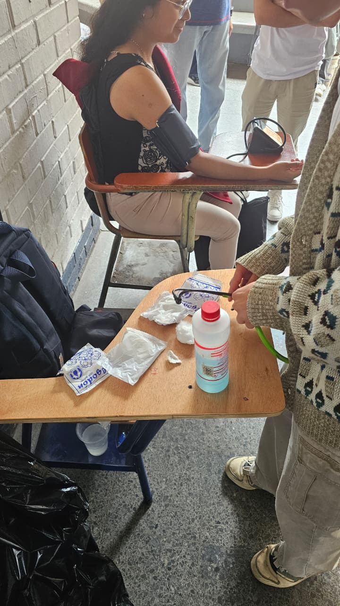
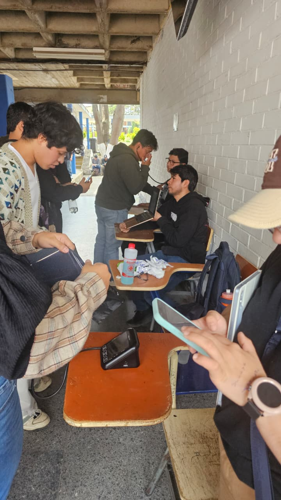
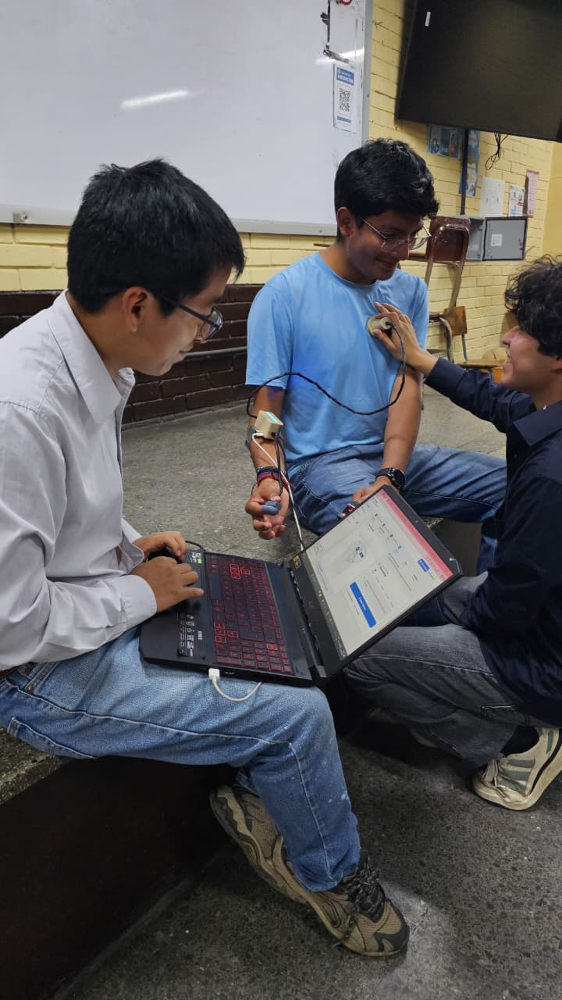
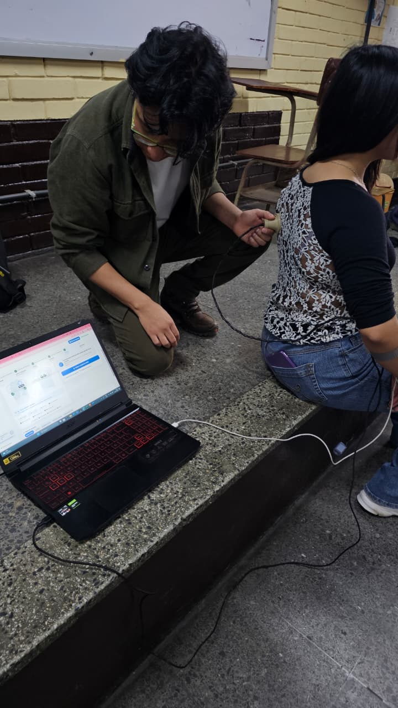
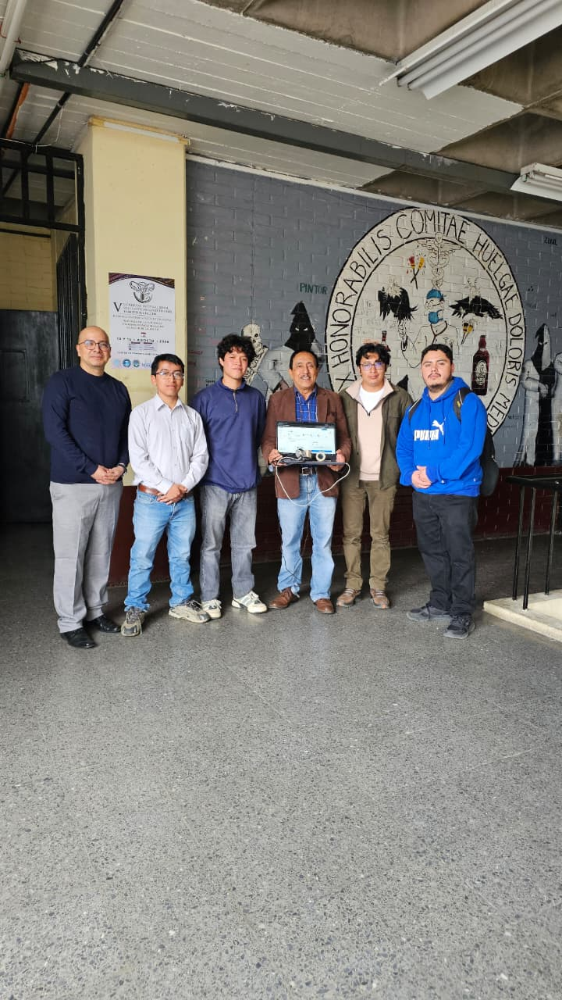

Prototipo biomédico integrado para el cribado preliminar y triaje asistido de señales cardiorrespiratorias, combinando acústica digital desacoplada, oximetría reflectiva y modelos de aprendizaje automático.
El sistema cuenta con hardware físico ensamblado y validado en banco de pruebas, complementado con un estudio piloto observacional en 18 estudiantes de medicina.
* Alcance regulatorio (TRL 4): Constituye una herramienta de asistencia preliminar al tamizaje. No emite diagnósticos concluyentes autónomos ni sustituye el criterio facultativo del médico. La validación clínica multicéntrica representa la siguiente fase de traslación.
La auscultación tradicional genera señales corporales de baja amplitud que se interpretan de forma subjetiva y se contaminan fácilmente en entornos ruidosos.
La apreciación de soplos o sibilancias cambia entre examinadores y no deja registro objetivo para segundas opiniones.
El murmullo de salas de espera, alarmas y roces sobre la piel degradan la relación señal-ruido del estetoscopio convencional.
Sin una herramienta rápida de cribado, los médicos de turno enfrentan la decisión de derivar a ciegas o posponer la atención.
Documentación de la etapa inicial realizada con estudiantes en pasillos de la facultad

Ver foto completaToma manual de signos vitales sobre pupitres en pasillos: esfigmomanómetro, alcohol y algodón. El proceso es lento y no genera trazabilidad digital.

Ver foto completaEvaluador auscultando con estetoscopio analógico mientras mide el tiempo con su celular en un pasillo concurrido, propenso a fatiga auditiva y sesgo de redondeo.
Sistema experimental de adquisición y análisis acústico de señales cardiorrespiratorias mediante aprendizaje automático para apoyo al triaje (TRL 4).
Señal de audio acústica directa desde el tórax mediante transductor digital MEMS I2S, evitando pérdidas analógicas.
Atenuación pasiva de ruido exterior con acoplamiento acústico cerrado y filtrado de banda digital en el ESP32.
Extracción de 61 características acústicas y clasificación algorítmica interpretable en 0.17 segundos por ciclo.
Semáforo visual de prioridad clínica (Verde / Amarillo / Rojo) para asistir al médico en la decisión de referir a tiempo.
El hardware actúa como el medio físico de captura limpia, transmitiendo datos hacia el pipeline algorítmico sin fricción en consulta.
Pasa el cursor sobre cualquiera de las 6 etapas del diagrama superior para inspeccionar parámetros de frecuencia, conversión digital I2S, búferes DMA, vector de descriptores y latencia del clasificador.
Inspección de las piezas reales impresas en FDM y principios biomecánicos
Para corroborar la captura en condiciones reales, el equipo evaluó el prototipo físico en el Edificio de Ciencias Médicas de la USAC, validando la adquisición sincrónica de bioseñales sobre voluntarios.

Foco Anterior Ampliar fotoAplicación de la campana cónica 3D sobre el tórax del voluntario sincronizada con el sensor óptico en dedo (MAX30102). La plataforma en laptop recibe simultáneamente audio digital y pulsioximetría en tiempo real.

Campos Pulmonares Ampliar fotoCaptura de sonidos respiratorios en la región posterior de la espalda. La interfaz despliega el mapa dorsal interactivo, asignando cada toma acústica a su cuadrante anatómico correspondiente sin confusiones.

Facultad de Medicina Ampliar fotoSesión de pruebas y demostración con el equipo de estudiantes, docentes y colaboradores en el edificio de Ciencias Médicas de la USAC, comprobando la estabilidad del hardware portátil y la ingesta de datos.